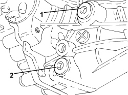
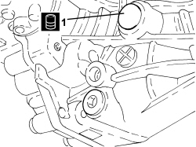

0010T54 REAR DIFFERENTIAL FLUID - REPLACE
- Path
- Procedures > 00 MAINTENANCE > 0010 NEW VEHICLES AND MAINTENANCE > 0010T VEHICLE FLUIDS > 0010T54 REAR DIFFERENTIAL FLUID - REPLACE
- Kind
- repair procedure (removal / refitting; the operation number is the code)
- Applies to
- engines: 3.2 JTS; all production periods
- Interactive page
- https://sloeber94.github.io/elrnDB-aBrrSpdr/en/#/946001764
Applies to: engines: 3.2 JTS; all production periods
- Position the vehicle on a lift.
1. Unscrew the rear differential casing filler plug.
2. Unscrew the rear differential casing drain plug and collect the fluid in a suitable container.

Applies to: engines: 3.2 JTS; all production periods
- Clean the drain plug and tighten it to the recommended torque.
Component | Fastening | dia | Value (daNm) | Validity |
|---|---|---|---|---|
Rear differential oil drain plug | Plug | M16 | 2.5 | 3.2 JTS 2.4 JTD 20V 4x4 |
1. Add fluid to the rear differential casing through the filler hole.
Component | Type | Description | Classification | Qty. | Validity |
|---|---|---|---|---|---|
REAR DIFFERENTIAL (RDA) | Oil [l] | TUTELA CAR MULTI AXLE | SAE 75W-85 - API GL-5 | 0.75 | 3.2 JTS 2.4 JTD 20V 4x4 |

Applies to: engines: 3.2 JTS; all production periods
- Check that the level of the oil just touches the lower edge of the filler opening.
- Clean the filler plug and tighten it to the recommended torque.
Component | Fastening | dia | Value (daNm) | Validity |
|---|---|---|---|---|
Rear differential oil filler plug | Plug | M16 | 2.5 | 3.2 JTS 2.4 JTD 20V 4x4 |
- Remove the vehicle from the lift.